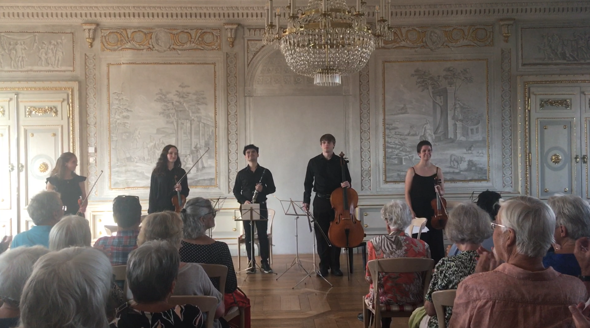

In Summer 2023 I had the honor of attending the International Chamber Music Academy of Southern Germany in Ochsenhausen, Baden-Württemburg. I got to be around outstanding musicians, from not only Germany, but all over the world. I was able to have private lessons with Hillel Zori, a fantastic cellist from Israel who gave me a new approach to left hand technique on the cello. The program was located in the small town of Ochsenhausen in rural Germany; I got to experience life in the town and speak German with the locals.
